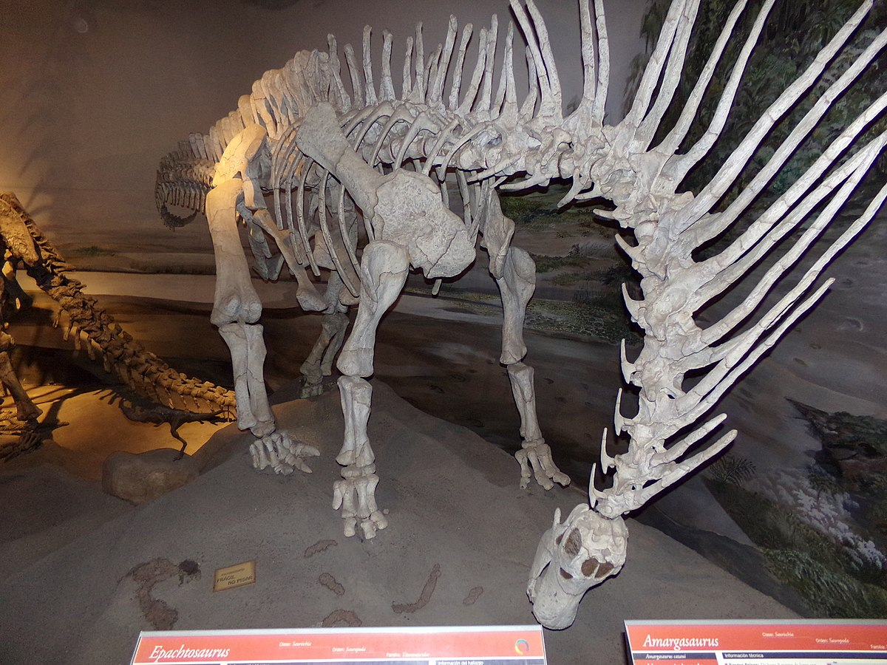

Amargasaurus
- Largo: 9-10 metros
- Alto: 2.6 metros
- Peso: 2.6 toneladas
- Posible hábitat: Llanuras aluviales

Amargasaurus fue un género de dinosaurio saurópodo dicraeosáurido que vivió hace entre 129.4 y 122.46 millones de años durante el Cretácico inferior (Barremiano-Aptiano) en lo que hoy es Sudamérica.
Descubrimiento e historia
El único ejemplar conocido, MACN-N 15, es un esqueleto virtualmente completo. Fue descubierto en febrero de 1984 por Guillermo Rougier durante una expedición encabezada por el paleontólogo argentino José Bonaparte. Esta fue parte del proyecto "Vertebrados terrestres del Jurásico y Cretácico de América del Sur", que se inició en 1975 para mejorar el escaso conocimiento de los tetrápodos del Jurásico y Cretácico de América del Sur. La misma expedición descubrió el esqueleto casi completo del abelisáurido Carnotaurus.
Vértebras y espinas dorsales
Quizás lo más característico de este animal sean sus alargadas espinas neurales que apuntan verticalmente, extendiéndose a través de todo el cuello hasta del lomo formando dos lineas paralelas. Tenían una sección transversal circular y se estrechaban hacia la punta. Las espinas más altas se encontraban en la parte media del cuello, donde alcanzaban los 60 centímetros de longitud. Estas apuntaban hacia atrás en el cuello, caso contrario del de su pariente, Bajadasaurus, cuyas espinas apuntaban hacia delante. Las dos últimas vértebras dorsales, la cadera y la cola de Amargasaurus también tenían espinas alargadas; estas no estaban bifurcadas, sino que se ensanchaban en un extremo superior en forma de paleta.
Locomocion
Amargasaurus era cuadrúpedo y probablemente incapaz de levantarse en sus patas traseras.Salgado y Bonaparte en 1991 sugirieron que Amargasaurus era un andador lento, ya que los antebrazos y las piernas eran proporcionalmente cortos, una característica común a los animales de movimiento lento.Esto fue contradicho por Gerardo Mazzetta y Richard Fariña en 1999, que argumentaron que Amargasaurus era capaz de una locomoción rápida. Durante la locomoción, los huesos de las piernas están fuertemente afectados por momentos de flexión, que representan por lo tanto un factor limitante para la velocidad máxima de un animal. Los huesos de la pierna de Amargasaurus eran aún más resistentes que los del rinoceronte blanco actual, lo que se adapta al galope.
